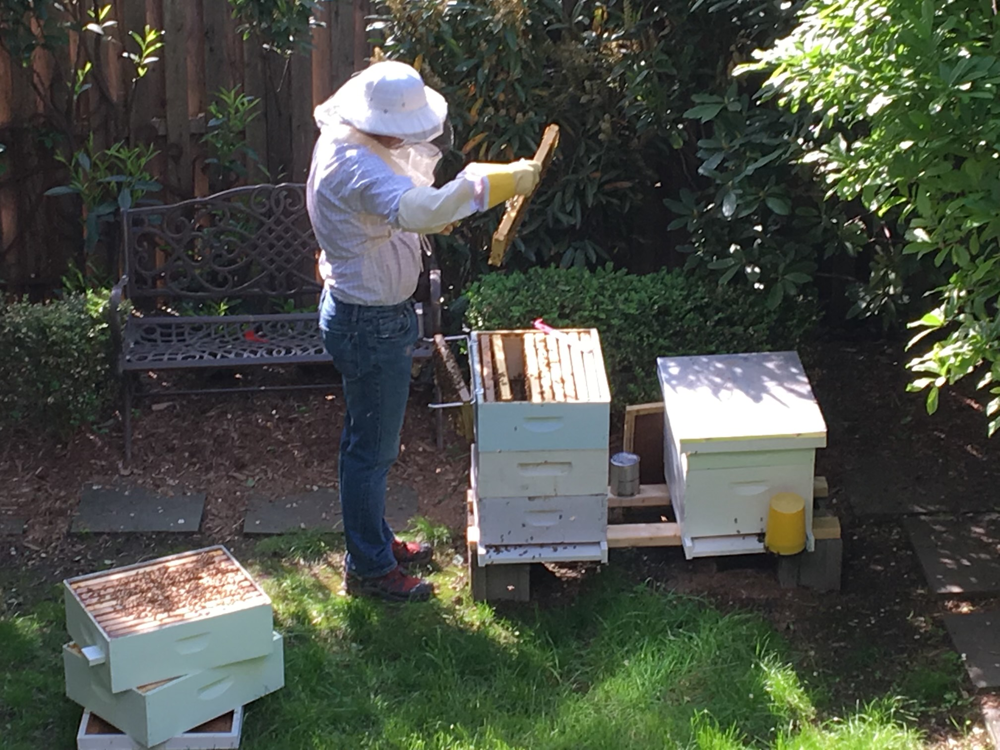

About Us
We are a local group in Brooklyn with Hives in our backyard since 2017. Mr. Morris Macleod handles and takes care of the bees along with harvesting and packaging the honey.
A little Bit of What We Do
From backyard hives to beautifully labeled jars, we harvest honey the old-fashioned way. Every step — from care to collection — is done by hand with love.
